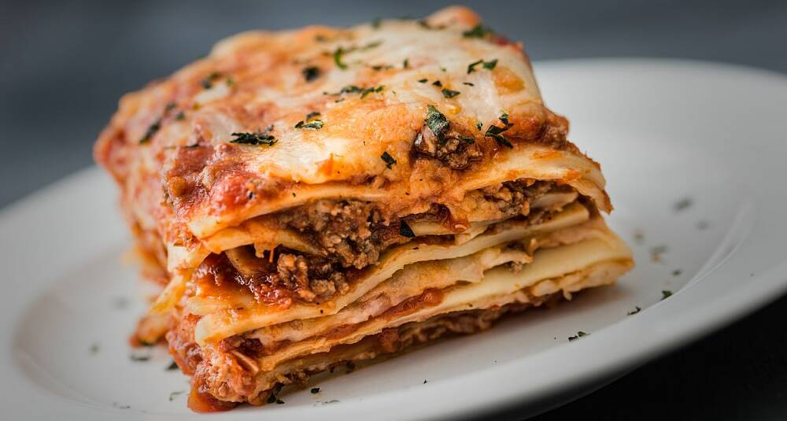

Lasagna

Description
Lasagne er en type pasta, men kan også betegne en matrett hvor denne pastatypen er i bruk
Ingredients
- 400 g kjøttdeig
- 2 ss olje til steking
- 1 stk. hakket løk
Steps
- Brun kjøttdeig i olje på sterk varme i to omganger. Ha all kjøttdeigen tilbake i stekepanna. Tilsett hakket løk, hvitløk, tomater, tomatpuré og vann. La kjøttsausen småkoke i ca. 10 minutter til den begynner å tykne. Dryss over basilikum. Smak til med salt og pepper.
- Smelt smør i en kjele og rør inn mel. Spe med melk under omrøring og la sausen koke i ca. 10 minutter. Den skal være forholdsvis tykk. Ha i parmesan og la osten smelte. Smak til ostesausen med krydder.